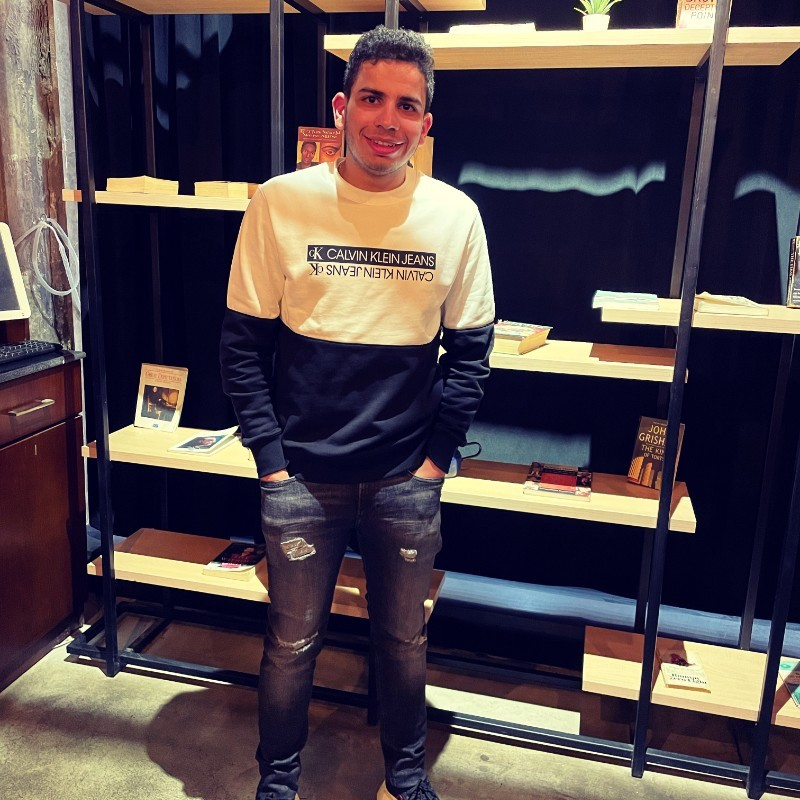

Marawan Abdelghany

Summary
Results-driven Computer Science and Engineering graduate at the German University in Cairo,
actively pursuing internship opportunities to apply and expand my skills in the field. Armed with
a solid academic background and practical experience, I bring a proactive mindset, effective
communication, and a passion for staying abreast of the latest industry trends. Eager to contribute to a
dynamic team, I am ready to leverage my theoretical knowledge in a real-world setting and make
impactful contributions to your organization's success.
Education
- Computer Science and Engineering from The German University in Cairo
Personal Projects
- Online Learning Platform
Collaborated in a team of four to design and develop a comprehensive online learning website using the MERN
(MongoDB, Express.js, React.js, Node.js) stack. The project aimed to provide a seamless and feature-rich platform for
users to access educational content, interact with instructors, and participate in courses.
- User Authentication and Authorization: Implemented secure user authentication and authorization mechanisms
to ensure privacy and control access to course content. Integrated user roles, distinguishing between students,
instructors, and administrators.
-
Course Management: Developed an intuitive interface for instructors to create, edit, and organize courses with
multimedia content. Implemented a dynamic course structure, allowing for modules, quizzes, and assignments.
-
User Profiles: Created user profiles with personalized dashboards, displaying enrolled courses, progress, and
recommendations based on user activity.
-
Real-time Communication: Integrated real-time messaging features, enabling direct communication between
students and instructors for queries and feedback.
-
Payment Gateway Integration: Implemented secure payment gateways for course enrollment, supporting
various payment methods to facilitate a seamless user experience.
- Resident Evil-Inspired Game (Unity and C#)
Collaborated within a dynamic group to conceptualize, design, and develop an immersive survival horror game inspired by
the Resident Evil series using Unity and C#. The project aimed to showcase our proficiency in game development,
teamwork, and creative problem-solving.
-
Interactive Environments: Implemented interactive and atmospheric environments, drawing inspiration from the
iconic settings of Resident Evil, to create an immersive gaming experience.
-
Character Design and Animation: Designed and animated characters with attention to detail, capturing the essence
of survival horror protagonists while incorporating unique elements to enhance the narrative.
-
Inventory System and Resource Management: Developed an intuitive inventory system that allowed players to
manage resources strategically, emphasizing the survival aspect of the game.
-
Puzzles and Challenges: Designed intricate puzzles and challenges inspired by the Resident Evil series, requiring
players to use critical thinking and problem-solving skills to progress through the game.
Skills
Python , C# , Java , Mongo , DP , JavaScript , Git , C++ , SQL
Languages
Arabic (Fluent); English (Fluent, 12 years of bilingual education); German(Fair)
Other
Contact Me